    <div class="blurb">
      <h1>Baja SAE</h1>
        <h2>I am the Technical President of Gonzaga's Baja SAE team, and here is a collection of the work I've done:</h2>
		<center>
		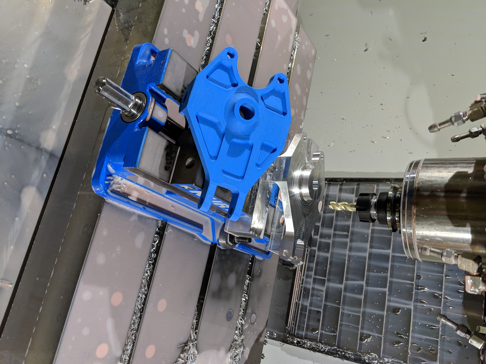
		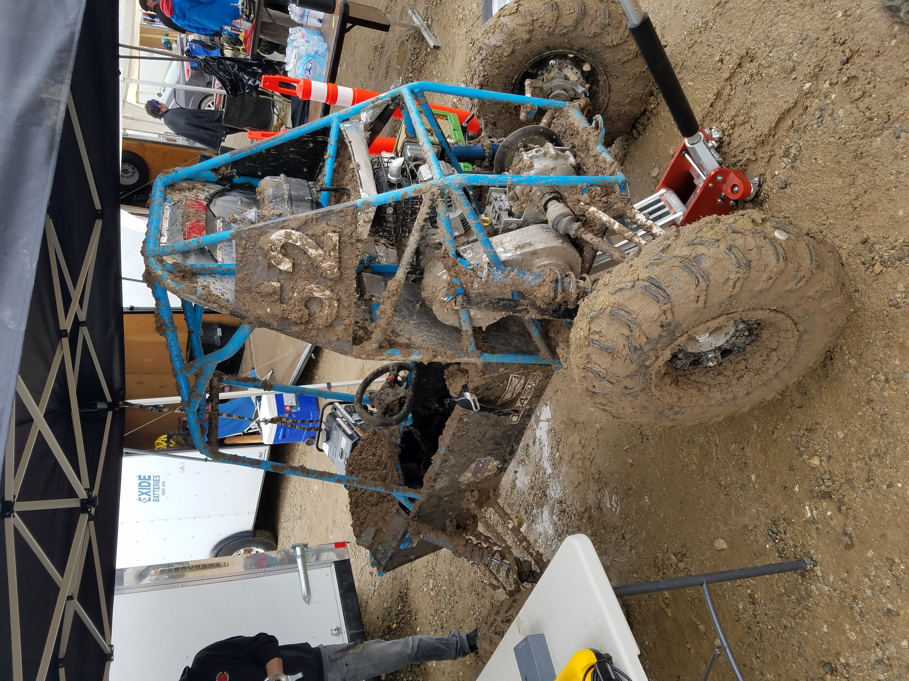
		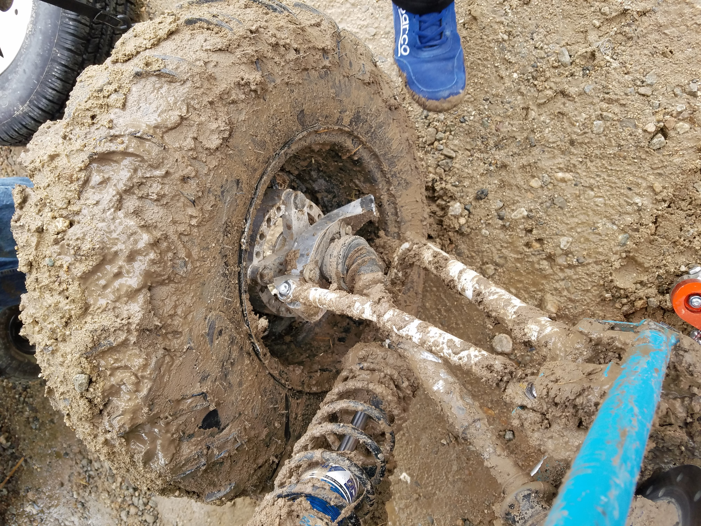
		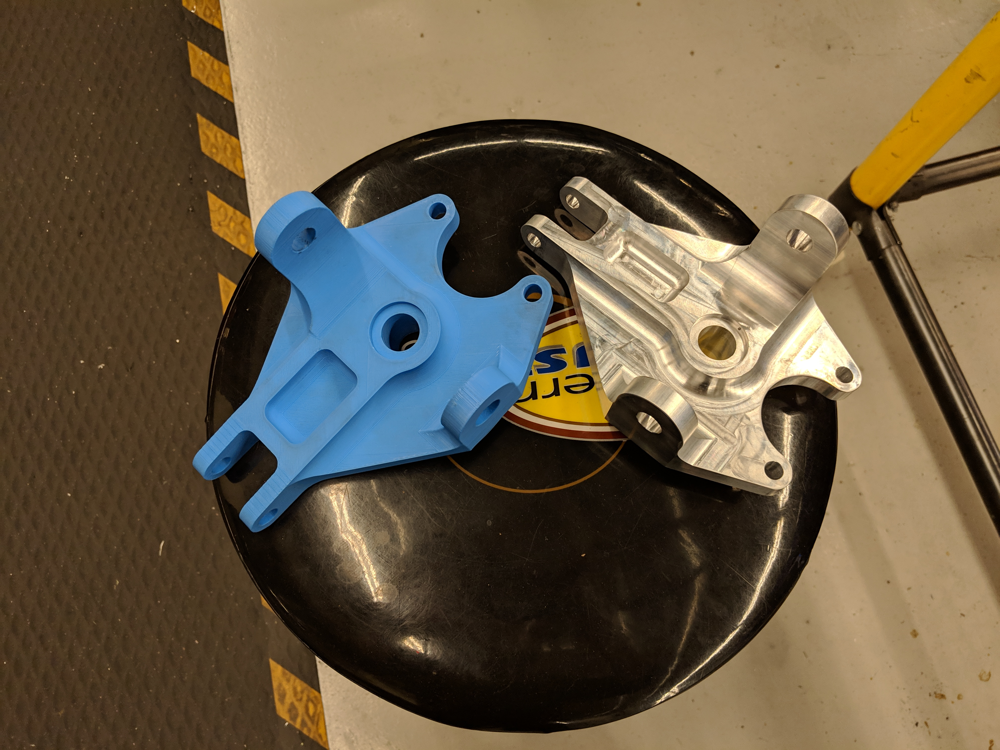
		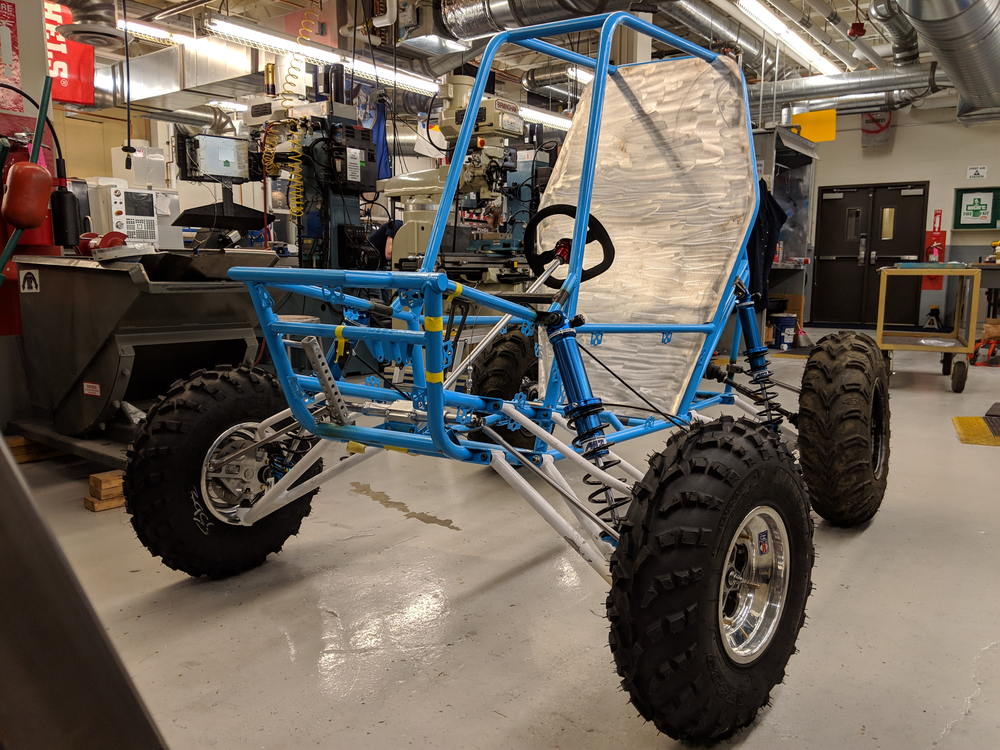
		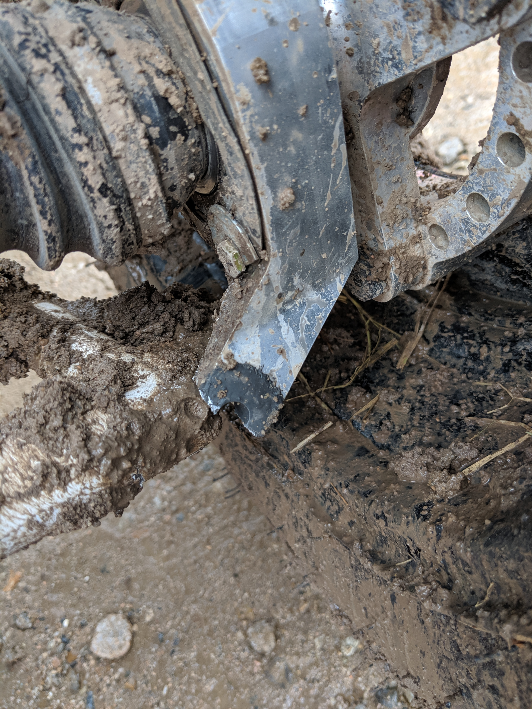
		
		
		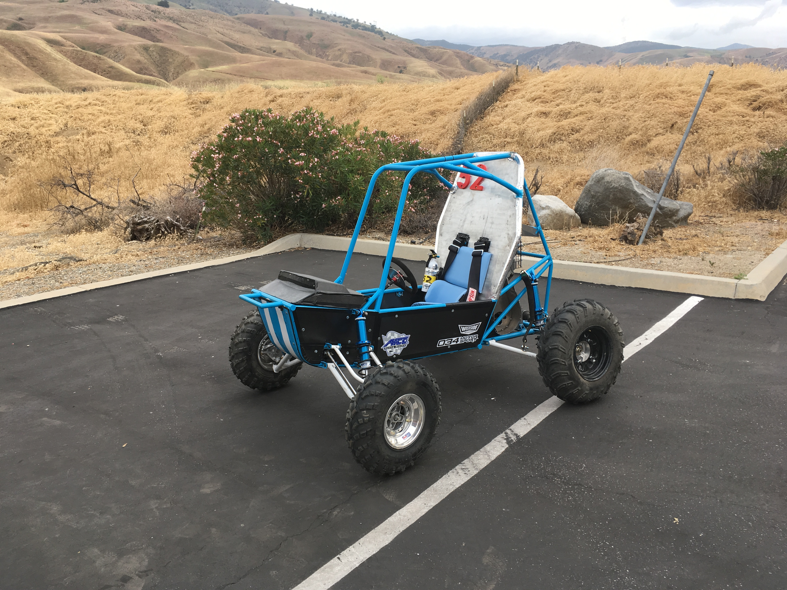
		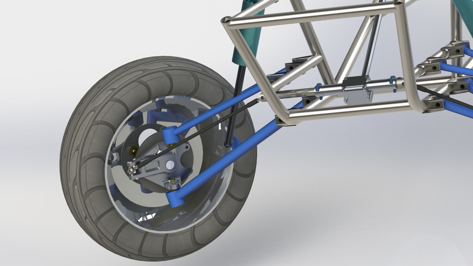
		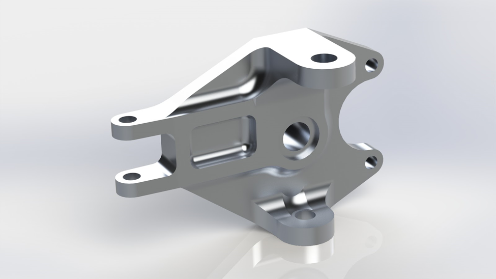
		
		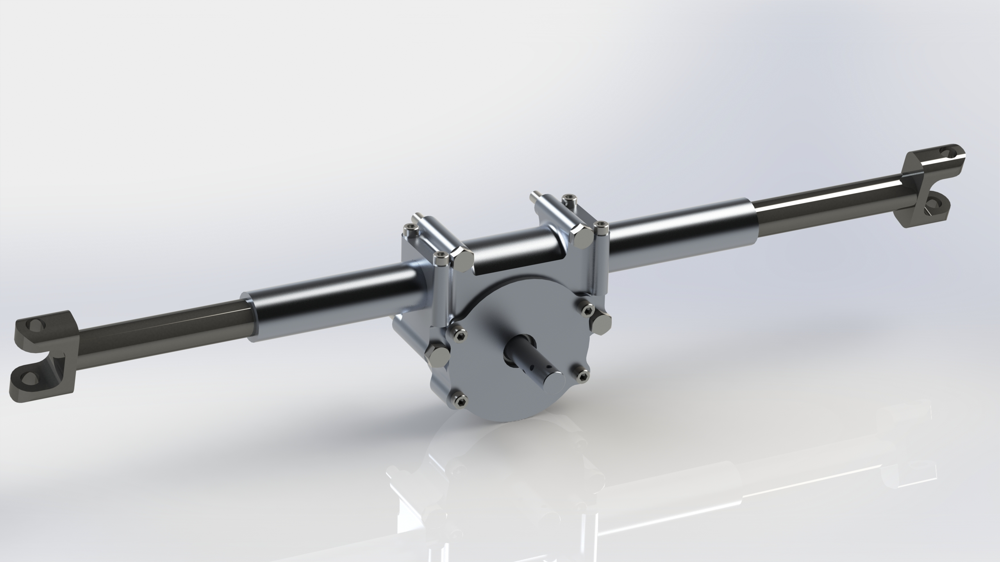
		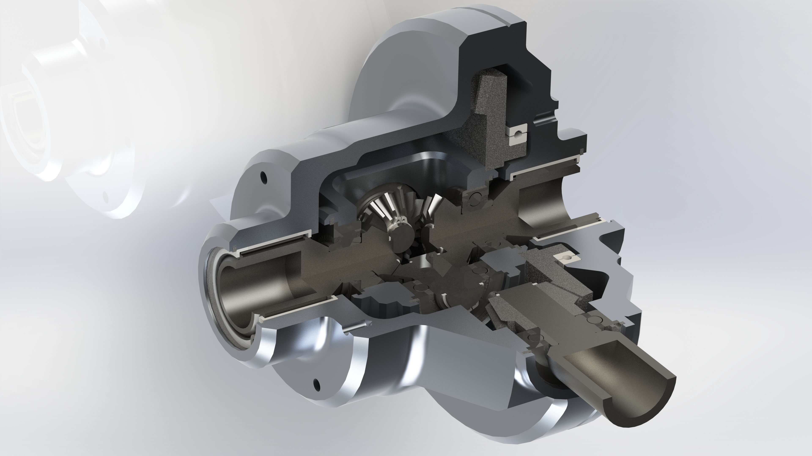
		
		
		
		</center>
	<p><a href="/index">return to the homepage </a></p>
    </div><!-- /.blurb -->
